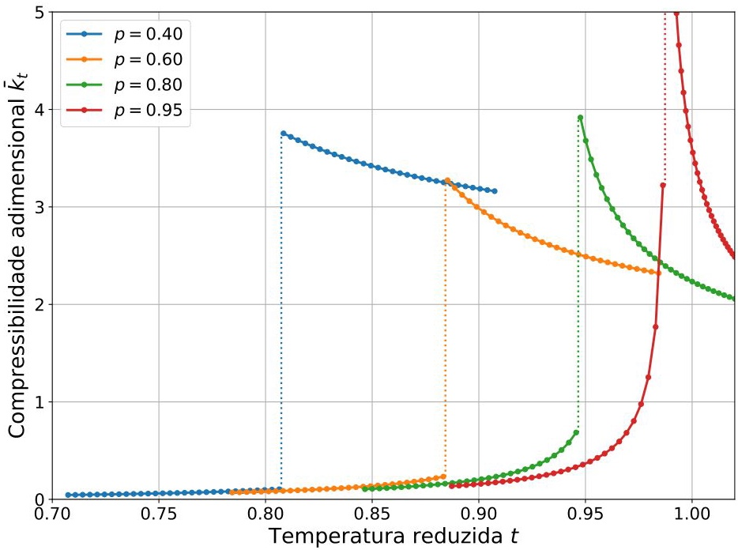

📐 Definição e Formalismo
A compressibilidade isotérmica (\(\kappa_T\)) quantifica a resposta relativa do volume frente a variações de pressão a temperatura constante.
\[ \kappa_T = -\frac{1}{V}\left.\frac{\partial V}{\partial P}\right|_T \]
Na forma adimensional reduzida (\(\bar{\kappa}_t\)):
\[ \bar{\kappa}_t = \frac{Z_c v^2(3v-1)^2}{3\left[3tv^3 - 2Z_c(3v-1)^2\right]} \]
📈 Comportamento Físico
A função apresenta uma descontinuidade abrupta na temperatura de equilíbrio \( t_{eq}(p) \), refletindo a transição de fase:
- Ramo Líquido (\(t < t_{eq}\)): Volumes reduzidos resultam em uma estrutura rígida e baixa compressibilidade.
- Ramo Gasoso (\(t > t_{eq}\)): Grandes volumes e interações esparsas permitem alta compressibilidade.
- Divergência: O denominador anula-se exatamente na condição da curva espinodal.
⚡ Flutuações Críticas
A divergência de \(\bar{\kappa}_t\) sinaliza que o sistema torna-se infinitamente sensível a perturbações de pressão.

Figura 15: Compressibilidade adimensional \(\bar{\kappa}_t\) vs temperatura reduzida \(t\).